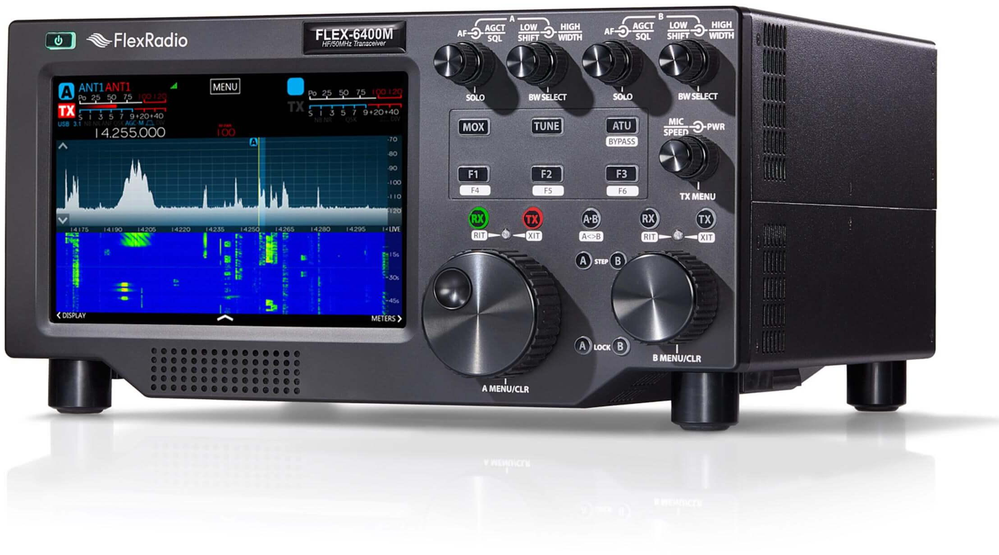
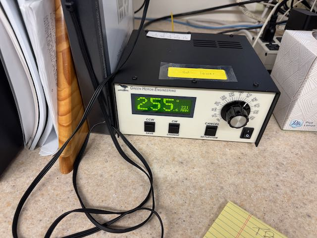
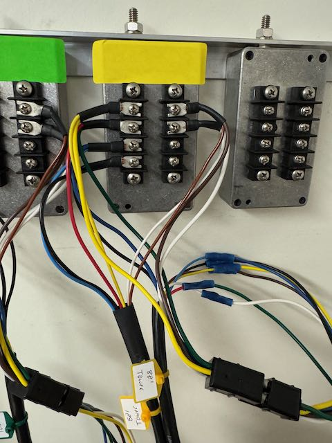
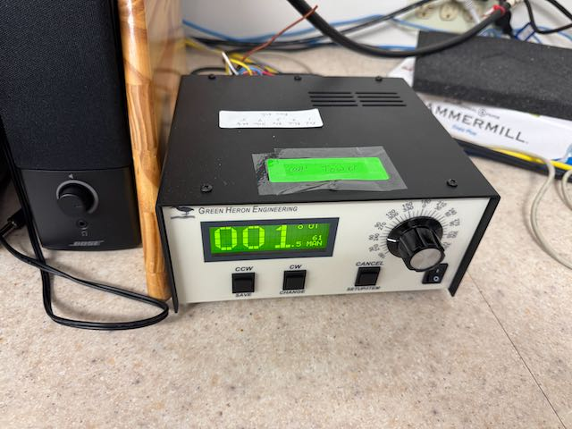

FlexRadio Flex 6400M
This page is under construction. Many components are missing.
Flex 6400M HF Transceiver

This transceiver is currently connected to the NARC-2 computer.
Manuals
Here are links to some useful FlexRadio manuals:
Connect and power-up
- Connect the Flex 6400M to an antenna.
Before you power up the radio, connect it to a suitable antenna. The antenna connections are located on the north wall, near the repeater cabinet. Choose the PL-259 connector with the yellow FlexRadio tag. Plug the cable from the radio into the cable connector for one of the antennas, for example, one of the triband Yagis for 10-20 m. Please do not remove the N/PL-259 connectors from the antenna feedlines.
We have been experimenting with remote control of some station operations, including powering on the rig power supplies. As a result, the next set of actions may or may not be required.
- Connect radio to the power mains.
- Power cables are located between the wooden shelf and the east wall.
- Plug the large 240 V cable (green tag) for the amplifier power supply into the 240 V wall outlet.
- Plug the smaller 120 V cable for the Uninterrupted Power Supply (UPS) into the 120 V wall outlet.
- Power up the UPS by pushing the front button. The green power light should illuminate.
Check to see if the Astron RS-35A power supply is on before carrying out the next step.
- Power-up the Astron RS-35A power supply that powers the Flex 6400M/NARC2. The power supply is located to the right of the Elecraft KPA1500 amplifier.

- Power up the Flex/NARC-2 by pressing and briefly holding the power button.
If you do not plan to use the amplifier or the built-in antenna tuner, you may skip step 6.
- Power up the Elecraft KPA1500 amplifier
The Flex/NARC-2 is connected to the Elecraft KPA1500 amplifier. The power supply for the KPA1500 is under the desk on a small footstool. Check that the KPA1500 power supply is on. If necessary, power-up the power supply by hitting the power switch on the upper rear left side of the power supply. When the amplifier power switch is on, you will see 3 green lights: AC on, High V supply, Low V supply. Power up the KPA1500 by pressing the on switch on the lower right hand side of the KPA1500 front panel.

Log-in to the computer
Power up the PC by pressing the power button on the right rear of the computer/display.
Log-in using the appropriate password.
The Flex 6400M is connected via USB to the NARC-2 PC.
Open your logging program of choice. NARC has licenses for N1MM and N3FJP’s Amateur Contact Log.
To operate digital modes (e.g., FT8/FT4, JS8Call, fldigi), open those programs. See instructions for operating these modes in separate documents.
Basic controls
Rotator controllers
The 60’ and 80’ towers have Mosley Yagi’s with Yaesu rotators and Green Heron Rotator Controllers.
Yellow controller
The yellow controller moves the antenna on top of the 80’ tower.
The control box is located between NARC-1 and NARC-2.

Before powering-up the controller boxes, connect the controller cables located near the antenna panel on the North side of the station.

Green controller
The green controller moves the antenna on top of the 60’ tower.
The control box is located between NARC-2 and NARC-3.

Before powering-up the controller boxes, connect the controller cables located near the antenna panel on the North side of the station.